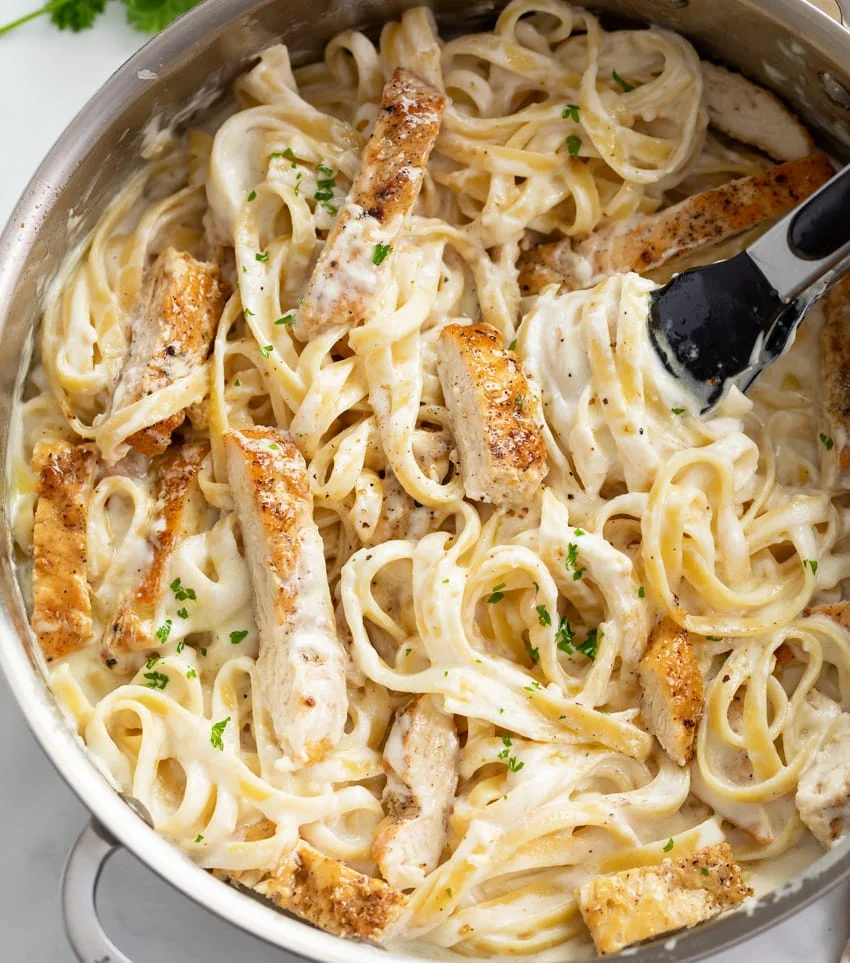

Chicken Alfredo Pasta

There are few things better than Chicken Alfredo Pasta, and what makes it even better, is that it's all prepared in a single skillet and is a breeze to make. (And it really tastes like it's from a restaurant!)
Ingredients
- 1 large boneless/skinless chicken breast, (or 2 small.) About ¾-1 lb.
- 6 tablespoons salted butter, high quality
- 3 cloves garlic, minced
- 2 tablespoons all-purpose flour
- 3 cups half and half, (half cream/half milk)
- ¾ cup Parmesan cheese, grated
- ½ cup Romano cheese, grated
- Salt and black pepper, to taste
- ¾ lb. Fettuccine
- Fresh parsley, to garnish
Steps
- Pro Tip: Reserve 1 cup of pasta water after the pasta is done cooking. This will give you full control over the consistency of the sauce at the end. A little splash can help if it becomes too thick. It's also helpful to have on hand if you are reheating leftovers.
- Measure out ingredients before beginning, then begin heating a pot of salted water for the pasta.
- Cut the chicken in half lengthwise to create 2-3 thinner slices. Pat dry and season each side with salt and pepper. Heat olive oil over medium-high heat and add the chicken. Sear on each side for about 4-5 minutes, until a golden crust has developed. Set aside and let it rest for 10 minutes, then cut into strips. Leave most of the chicken remnants (“fond”) in the pan, but wipe away any black spots if there are any.
- Boil the pasta according to package instructions, then drain. Prepare the sauce while the pasta boils.
- Melt the butter in in the same skillet that you used to cook the chicken over medium heat. Add the garlic and cook for one minute.
- Whisk in the flour and cook for 1-2 minutes, stirring continuously.
- Add the half and half in small splashes, stirring continuously.
- Bring to a gentle bubble, then reduce heat to low. Let it simmer while the pasta finishes cooking. The water from the liquid will slowly evaporate which will make the sauce thicker. Stir it occasionally.
- Slowly stir the grated cheese into the sauce. (*Be sure to do this over low heat.*) Taste and season with salt/pepper if desired.
- Add the drained pasta and toss until well incorporated. The pasta will absorb the sauce and it will continue to thicken.
- Add the chicken back and toss. Allow it to heat back through, 1-2 minutes.
- Garnish with chopped parsley and serve!